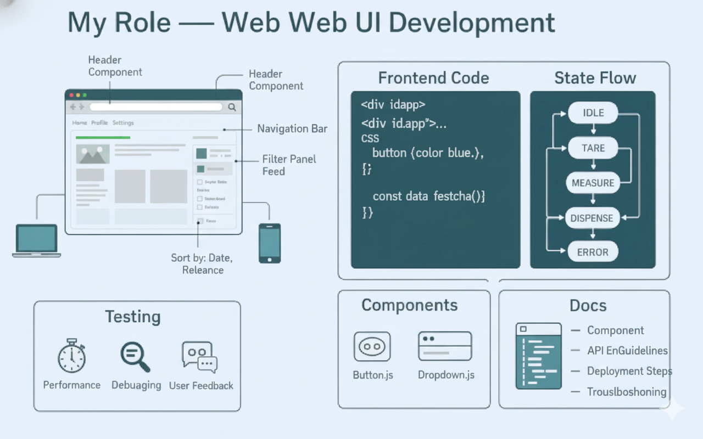
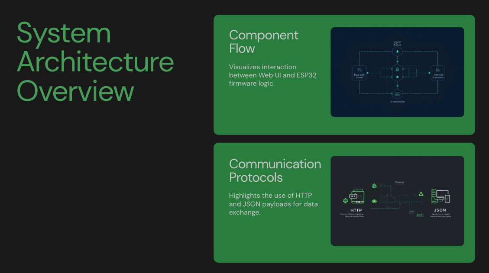
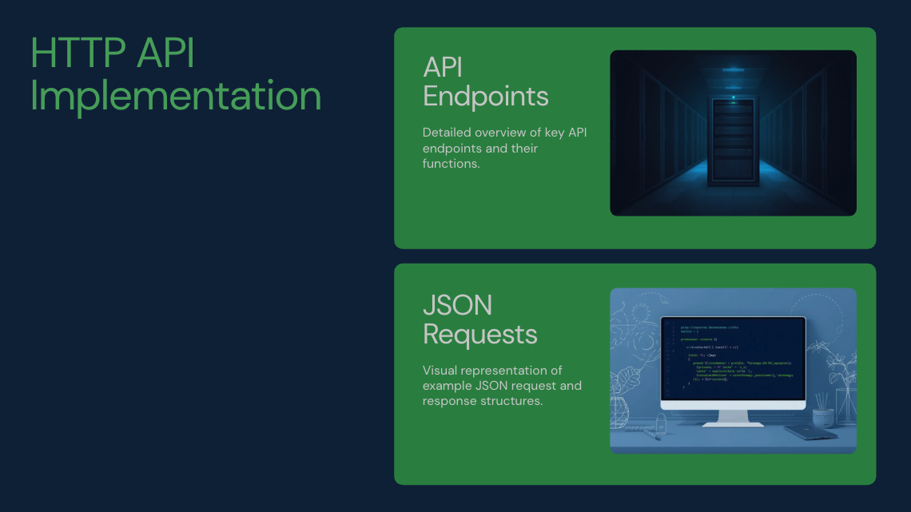

IoT Pet Feeder
Project Demo
Overview
Smart IoT Pet Feeding System designed to automate pet care.
- Feeding Automation: Ensures pets are fed consistently and on time.
- Scheduled Feeding: Simplifies meal times with automated schedules.
- Weight Monitoring: Tracks food consumption for health management.

Methodology
The system utilizes IoT sensors connected to a central controller to manage servo motors for dispensing food and load cells for weighing.


BibTeX
@misc{iotpetfeeder2025,
author = {Dat, Ngo Thanh and Minseok, Lim and Hafiz, Khalifa},
title = {IoT Pet Feeder},
year = {2025},
publisher = {Sejong University}
}